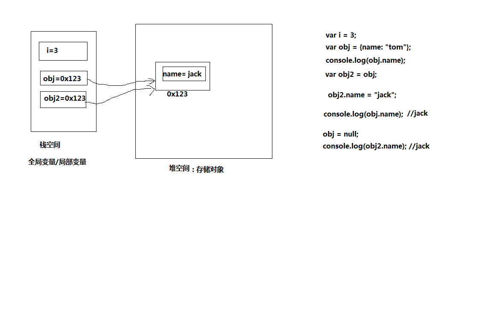
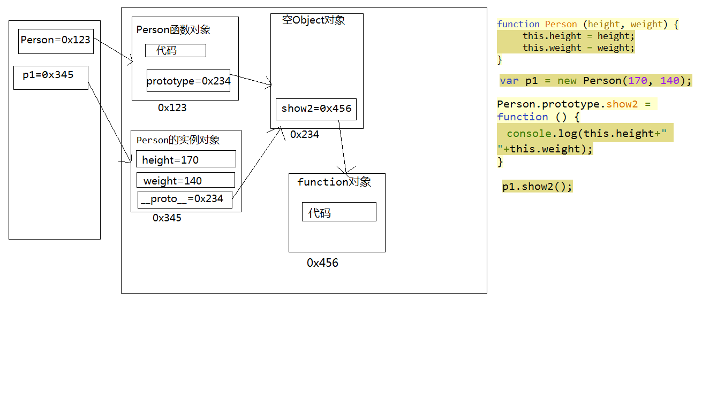
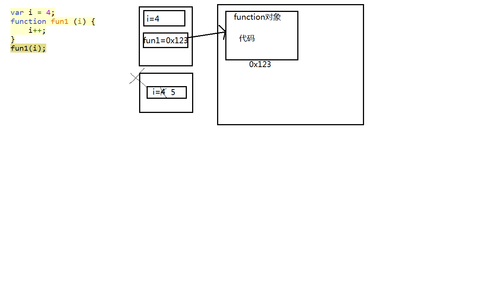
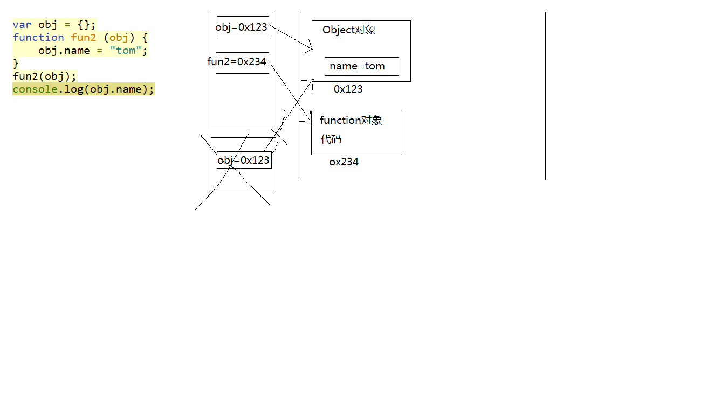
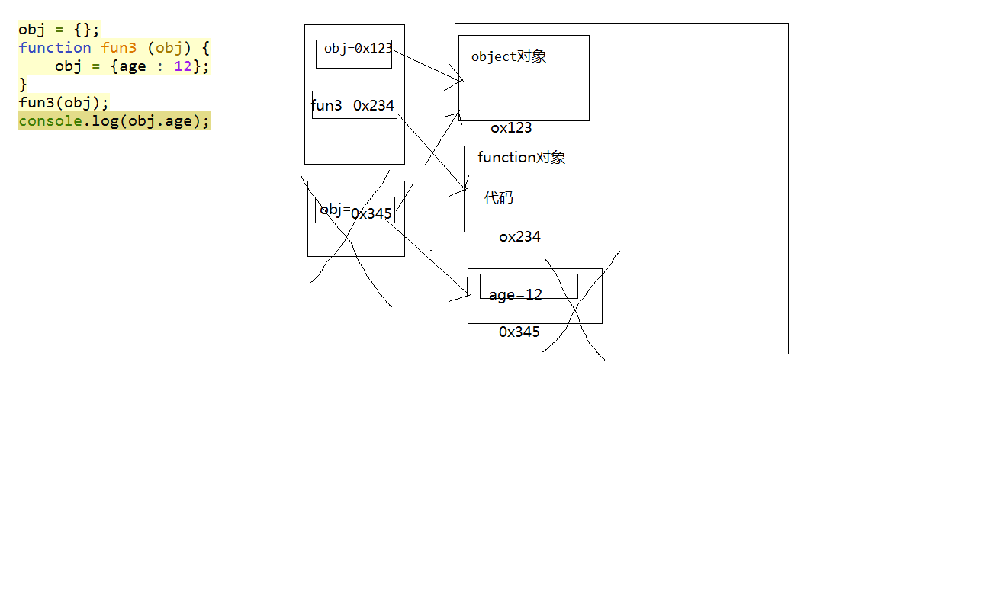

原型
原型的基本理解
所有的函数都有一个特别的属性, 属性名为prototype, 属性值默认为{}
所有的实例对象都自动拥有了类型函数对象的prototype对象的属性/方法(继承)
构造函数的原型(对象)是其所有实例对象的父对象
Javascript的基本继承就是基于原型的继承
原型的基本使用
function Fun(){}
var f = new Fun();
Fun.prototype.xxx = value;
f.xxx; --->value
分析原型(画内存图)
每个函数function都有一个prototype，即原型, 默认为{}
每个实例对象都有一个__proto__，称为隐式原型
对象的__proto__与对应的构造函数的prototype指向同一个对象
对象查找属性的流程
从自己内部查找, 如果找到了直接返回, 否则进入2
从__proto__所指向的对象(也就是原型)中查找, 如果找到了返回, 否则进入3
从原型对象的_proto__所指向的对象中查找, 如果找到返回, 否则继续向上一级原型中查找, 直到找到或没有原型了返回undefined为止
内存运行分析:
全局栈: 全局变量-->js开始执行就产生, 关闭页面消失
函数栈: 局部变量-->调用函数才产生, 函数执行结束消失
堆空间的对象什么时候被回收: 在栈空间中没有一个变量指向它, 它就是垃圾对象, 就应该被自动回收
内置对象 Object
理解:
所有对象的超类类型
Object中定义的属性/方法, 所有的对象都自动拥有
创建此类对象:
new Object() / {}
{name:value,name2:value2...}
操作属性:
obj.constructor : 指向用于创建当前对象的构造函数对象的引用
Object.prototype：原型对象
obj.__proto__ : 原型对象
调用方法:
obj.hasOwnProperty(propertyName) 检查对象是否有自己定义属性/方法
原型对象.isPrototypeOf(实例对象) 检查对象是否是指定对象的原型
对象.toString() 返回对象的字符串表示




